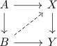

lifting a CW pair against a serre fibration and commuting up to homotopy
Proposition
Let $\iota: A \rightarrow B$ be a CW Pair, $p: X \rightarrow Y$ a serre fibration Suppose there exits a lift

where the bottom square only commutes up to homotopy.
Then there exists a lift such that the whole diagram commutes